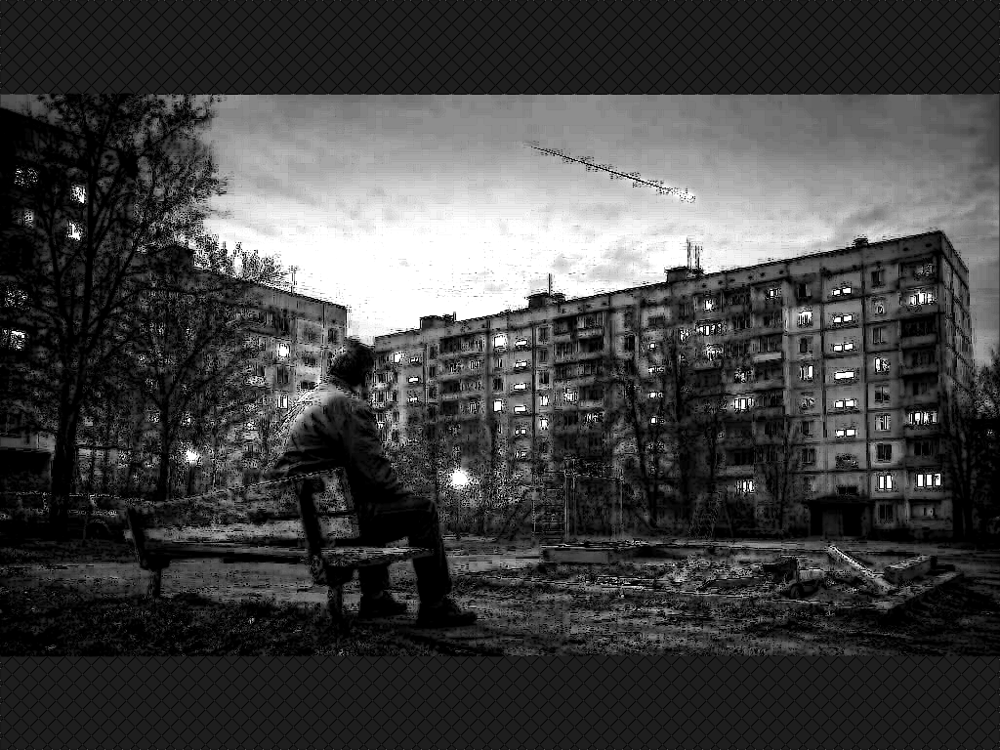

Книга «Фугу для человечества»
Глава 1. Старик и вопрос, который кажется детским

(в которой выясняется, что знать, чего хочешь, гораздо труднее, чем кажется)
На лавке у детской площадки сидел мужчина.
Для ровесников — ещё молодой.
Для детей — старый дядька.
Для подростков — отдельная биологическая сущность. На «вы» — нелепо. На «ты» — неуютно.
Поэтому его просто обходили.
Он сидел давно.
В старой куртке. Чуть ссутулившись.
Смотрел на двор.
Двор как двор.
На площадке пацаны матерились из-за мяча.
Две мамаши обсуждали соседку. Выражения они выбирали далекие от высокого слога Цветаевой, Ахматовой или Блока, и говорили нарочито громко — в расчете на то, что объект сплетен услышит всё лично, либо ей обязательно донесут.
У песочницы мужик в растянутой майке пытался одновременно открыть пиво и объяснить сыну, почему тот «опять всё делает не так».
Скамейка. Качели. Пластиковая горка.
Маленькая модель человечества.
Мимо лавки шла компания.
Четверо.
Не хулиганы. Просто всегда вместе, громкие и абсолютно уверенные, что взрослые безнадёжно отстали от жизни.
Артём обычно знал ответ.
Макс знал, что с ответом делать.
Санька знал, как это высмеять.
А Егор...
Егор просто шёл рядом. Он никогда не выглядел человеком, который точно знает маршрут.
— Чё он опять бормочет? — Санька кивнул на лавку.
Старик действительно бубнил под нос, глядя на песочницу и мужика с пивом.
— Может, с кем-то разговаривает? — прищурился Макс.
— С кем?
— С собой.
— А-а. Ну тогда понятно. А я думал, у него Wi-Fi в голове.
— Какой ещё Wi-Fi?
— Прямой. С мирозданием.
— Гарнитуры нет.
— Значит, тариф безлимитный.
Егор усмехнулся. И тут старик произнёс чётче:
— Человек — это звучит гордо.
Шаги замедлились.
— Охренеть, — выдохнул Санька. — Началось.
— Горький, — на автомате выдал Артём.
Старик повернул голову:
— Молодец.
Артём растерялся:
— В смысле?
— В прямом.
— А вы... — он осёкся.
«Вы» прозвучало удивительно естественно.
Старик усмехнулся:
— Видишь? Уже определился. А я ведь для тебя кто?
— Ну...
Старик не дал ему закончить и ответил сам:
— Возраст — странная вещь. Для одних ты молодой. Для других — старик. Для третьих — неизвестно кто.
Санька прыснул:
— Сущность.
— Что? — с иронией уточнил старик.
— Он говорит, вы — отдельная сущность, — пояснил Макс.
Старик прищурился:
— Разумная?
— Это доказать надо.
Макс толкнул Саньку локтем:
— Отстань.
Но старик засмеялся.
— Хорошо. Значит, не всё потеряно.
Он снова посмотрел на песочницу. Пацаны не уходили.
— Забавное всё-таки создание — человек, — вновь выдал старик.
— Человек?
— Человек. — Кивок в сторону подъезда. — Вот, например, гражданин Пантюхин.
— Из сорок второй? — уточнил Макс. И, получив утвердительный кивок головы, закончил протяжно: — А-а, этот.
Пантюхина знали все. Гений дворового масштаба.
— Он тебе атомный реактор на пальцах разложит, — продолжил старик.
— Да ладно, — иронично заметил Санька.
— А из старого утюга соберёт геномный анализатор, — продолжал старик, не обратив внимания на иронию.
— Чего соберёт? — вновь переспросил Санька.
— Вот видишь. Не знаешь.
— А вы?
— Я-то знаю.
— Ну и что?
— А ничего, — как-то сухо отсёк старик, отбив всякое желание переспрашивать.
Повисла пауза.
— Самое смешное, что Пантюхин может двадцать минут биться с нейросетью о поэзии Серебряного века, — спустя мгновение продолжил речь старик.
— С нейросетью? — оживился Артём. И добавил: — Кого-кого?
— Судя по крикам из окна — пока ничья, — с улыбкой ответил старик.
Пацаны прыснули коротким смехом.
— Но стоит ему выйти во двор... — Старик выдержал паузу. — Вся научно-техническая революция разбивается о жизнь.
— Это как? — спросил Егор.
— А вот так. Имеет ли право гражданин считаться разумным, если нажимает кнопки домофона не сверху вниз, а снизу вверх?
Повисла тишина. Компания переваривала услышанное. Потом Санька заржал:
— Да ну на фиг!
— Реально было? — не поверил Артём.
— Конечно, — кивнул старик.
— И что?
— Пантюхина неделю не пускали на лавочку.
— Из-за домофона?! — уточнил кто-то из пацанов.
— Именно.
Егор впервые посмотрел на старика внимательно.
— Вот, — кивнул тот.
— Что? — переспросил Егор.
— Ты задумался…
А Егор продолжил:
— Странно это. Разбираться в атомах и одновременно...
— Быть идиотом?
— Я не это хотел сказать, — робко ответил Егор.
— Зря. Вещи нужно называть своими именами.
Старик вновь окинул взглядом двор. Детей. Родителей. И с легкой иронией спросил:
— И тут возникает совершенно детский вопрос. Кем вы хотите стать?
Санька закатил глаза.
— О-о-о... Началось…. «Кем ты хочешь стать, когда вырастешь?» Бред.
— Почему?
— Мы не дети. Никто сейчас не знает.
— А ты?
— Я знаю.
— Кем?
— Богатым.
— Вот и весь ответ, — усмехнулся Макс.
— А ты?
— Нормально жить. Дом. Машина. Деньги. Чтоб никто не лез. Отдыхать.
— Неплохо.
А ты? — продолжил старик, кивком головы указав на стоящего чуть поодаль Артёма.
— Нормальная работа. Потом своя фирма. Чтобы самому решать. Всё.
Старик перевёл взгляд на Егора.
— А ты?
Егор помолчал.
— Не знаю.
— Великая мудрость, — фыркнул Санька.
— Нет, — отрезал старик. — Честный ответ.
Он поправил воротник куртки.
— Знаете, что удивляет? В детстве разрешают хотеть. Космонавтом. Учёным. Пожарным.
— Футболистом.
— Да. А потом объясняют: это фантазии.
— Взрослому надо думать о реальности, — пожал плечами Артём.
— То есть не «кем стать», а «что получить»?
— Разница какая?
— Огромная.
Взгляд на Саньку.
— Хочешь много денег. Зачем?
— Чтобы были.
— Потом?
— Ещё больше.
— Зачем?
Санька нахмурился.
— Чтобы о них не думать.
— Занятно. Всю жизнь зарабатывать, чтобы однажды перестать об этом думать.
Макс хмыкнул. Логично.
— А теперь представьте: всё это есть. Дом. Машина. Отдых. И что дальше?
— Ничего, — пожал плечами Макс.
— Вот и я спрашиваю: что дальше?
— Жить. Здесь.
Старик кивнул.
— Земля большая. Можно жизнь прожить и не увидеть тысячной доли.
— Зачем нам больше?
— Я не говорю, что вам нужно. Я спрашиваю, почему человек всегда хочет большего. Денег, свободы, метров. А Земля всё-таки не резиновая.
— Места пока хватает, — бросил Санька.
— Пока.
Старик посмотрел вверх.
— Забавно. Огромная планета, а мы всё делим её на куски. Но если человек захочет больше, чем может дать эта колыбель?
— Космос? — спросил Артём.
— Опять космонавты, — скривился Санька.
— Пока нет. — Старик встал. — Сначала надо захотеть. Не квартиру. Не машину.
Он поднял глаза. В густеющей синеве над крышей панельки, будто случайно, беззвучно ползла белая точка спутника.
— А мира. Побольше. – сказал он, опустив взгляд.
Точка пропала за набегающими облаками.
— Был человек. Понял это раньше остальных. Продолжал старик.
— Циолковский, — кивнул Артём.
— Опять знаешь, — как-то по-доброму заметил старик и продолжил.
Сидел в глухой Калуге и смотрел дальше соседей. Земля — колыбель разума...
— ...но нельзя вечно жить в колыбели, — закончил Артём.
— Именно. Он думал, мы вылезем трогать звёзды.
— А мы?
— А мы вылезли, чтобы кидаться грязными игрушками в соседа.
— Тоже достижение, — оскалился Санька.
Старик сел.
— Теперь главный вопрос. Почему человечество не в космосе?
— Мы же в космосе. Спутники. Станции.
— Я не про железки. Не про топливо и радиацию.
— А про что?
— Про людей.
— Люди мешают? — нахмурился Макс.
— Люди мешают людям. Технически мы должны пить чай у Юпитера и ругать межпланетную почту. Беда не в том, что мы не умеем летать далеко.
Взмах рукой в сторону двора.
— Мы не умеем смотреть дальше забора. Строим телескопы, заглядывающие на миллиарды лет назад. И неделю не разговариваем из-за кнопок домофона.
— Дебилизм.
— Человеческий дебилизм.
Пауза.
— Построили искусственный интеллект, но забыли перестроить собственную голову.
— Это возможно? — спросил Артём.
— Труднее ракеты. Ракету можно разобрать. А человек уверен, что он — финальная версия.
Смешок.
— Трагикомический конфуз. Расшифровываем геном, смотрим в начало Вселенной... И тратим разум на выяснение: имеет ли вон тот право на то же небо?
— Если он нормальный... — начал Макс.
— Кто определяет?
Макс запнулся.
— Вот с этого «ну» и начинается вся история человечества.
Старик вздохнул.
— Напоминает приготовление азартным, но не в меру выпившим поваром, рыбы фугу.
У нас на руках величайший деликатес и смертельный яд — разум. Срежешь не тот пласт упрямства — и вместо звёзд получишь глобальное отравление. Мы сидим у пещеры, в одной руке суперкомпьютер, в другой — дубина. И искренне удивляемся, почему нас не пускают в приличный космос.
— Какая рука какая? — Санька посмотрел на свои ладони.
— Зависит от обстоятельств.
Егор подался вперёд.
— Циолковский думал... люди станут лучше?
Старик посмотрел на небо.
— Он знал цену человеческой душонке. Бесконечно мала, когда заперта в злобе. Безгранична, когда перестаёт делить людей на сорта.
— Всегда будут свои и чужие, — упёрся Макс.
— Вчера чужой из-за домофона. Завтра — из-за другого. Пока мы тратим века на сортировку, космос ждёт.
— Чего?
— Нас.
Темнело.
— То есть, мы не готовы? — спросил Артём.
— Мы спрашиваем: «Когда полетим?» — Старик встал. — А надо спрашивать: «Куда хотим попасть?». И «кем хотим там оказаться?».
Он сделал шаг. Пацаны замерли.
Егор пошёл первым. За ним Макс.
Артём смотрел в небо.
Санька толкнул его в плечо.
— В космос, профессор?
— В космос.
— Пешком?
— Ракету построй.
— Из утюга?
Артём улыбнулся:
— Почему нет?
Двор остался прежним.
Мат. Пьяный отец. Песочница. Домофон.
Всё на месте.
Просто четыре подростка впервые шли и смотрели не под ноги.
А старик, отстав, поднял глаза.
И улыбнулся.
Вопрос, казавшийся детским, наконец прозвучал.